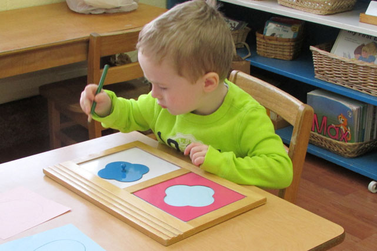
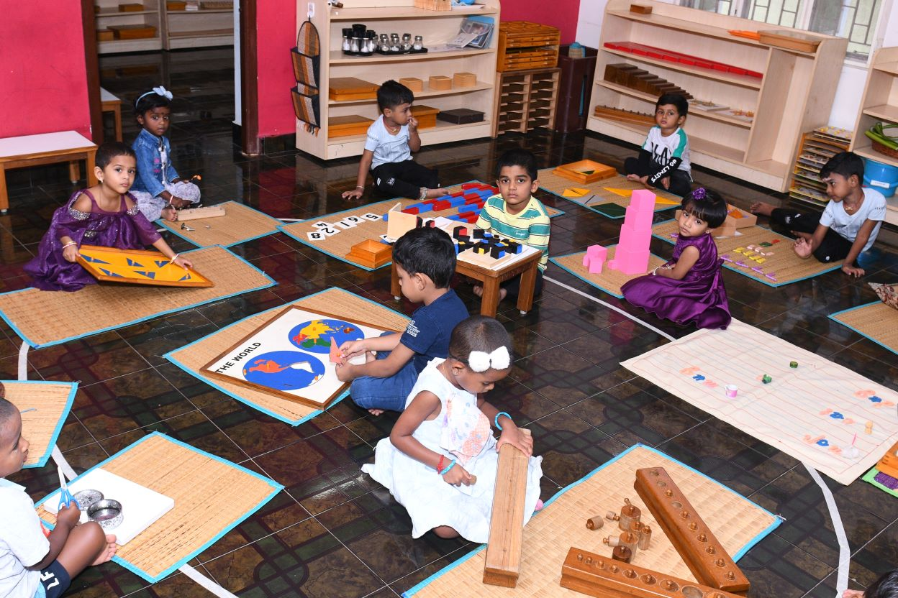
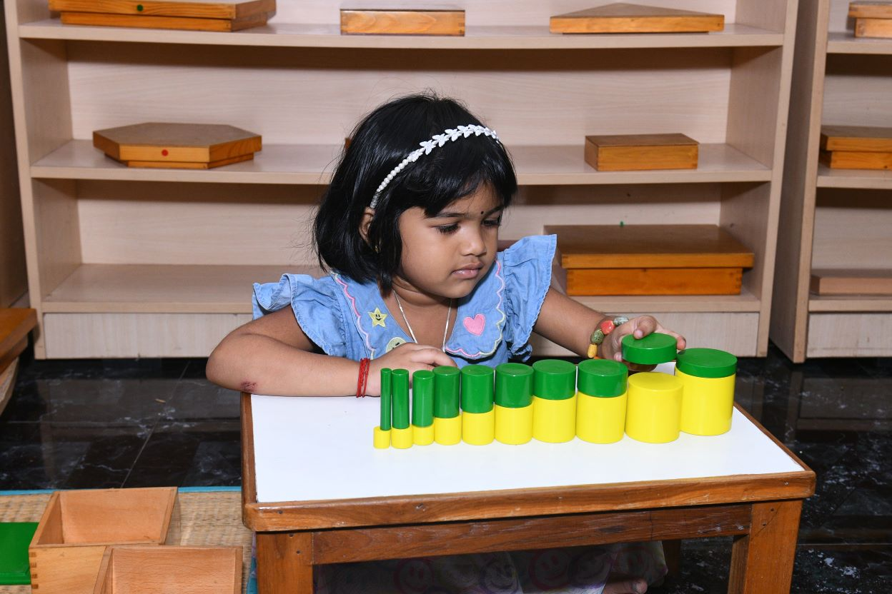
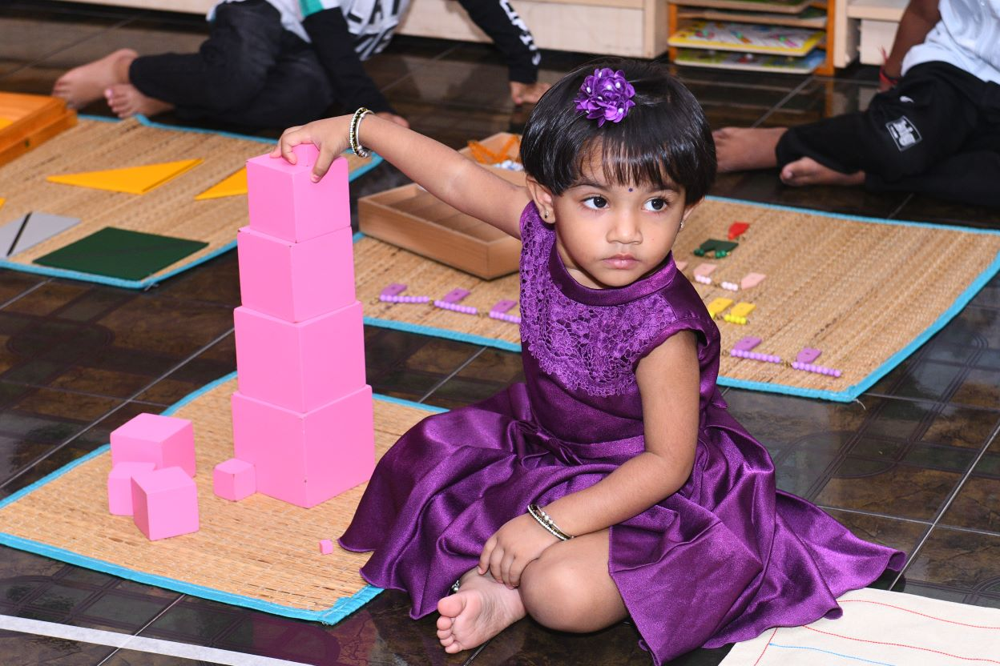
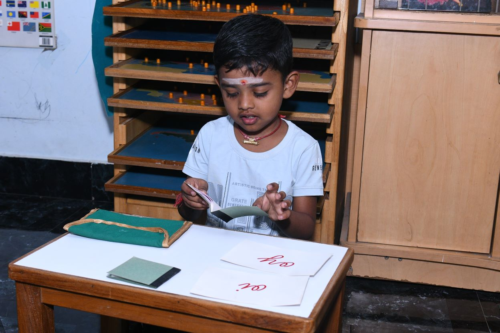
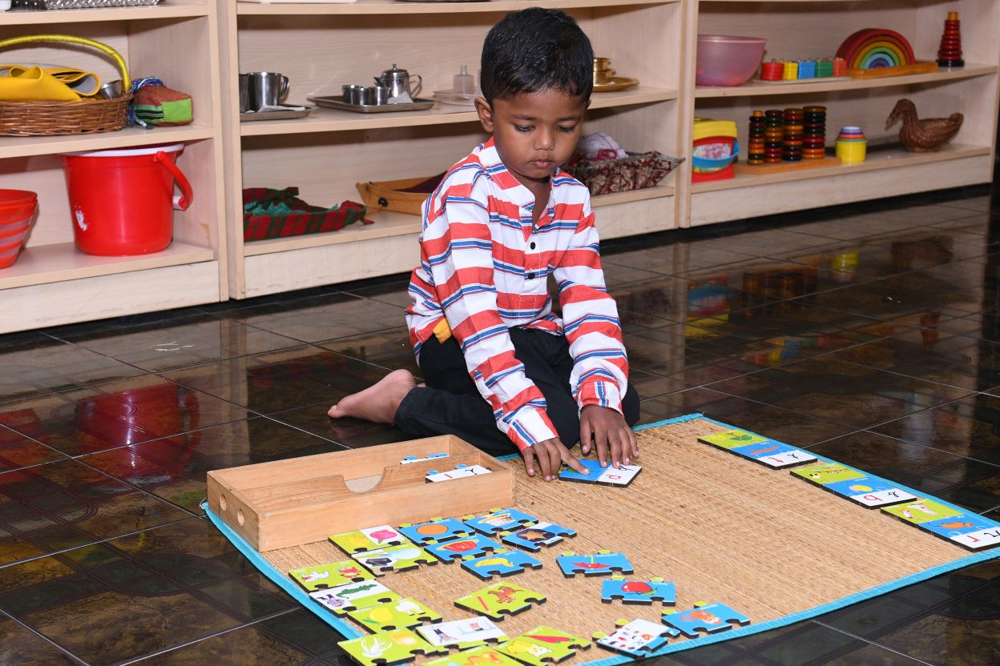
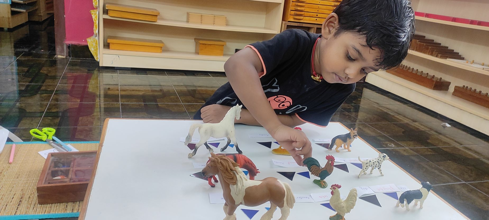
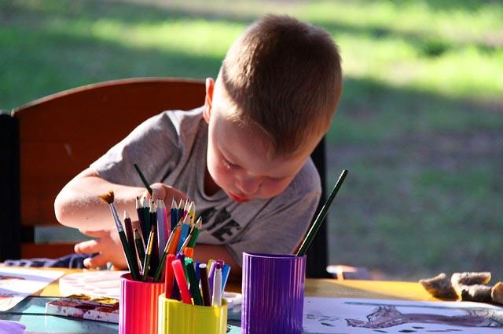

24–30 months
Nido
A gentle first environment for movement, language and growing independence.
Learn more →Castle Montessori School · Tambaram
We create thoughtful Montessori environments where children build independence, confidence and a lasting love of learning.


A child-first education
Montessori gives children the freedom to explore meaningful work at their own pace. With patient guidance and carefully prepared spaces, they develop practical skills, concentration and respect for the world around them.
Meet the Montessori approach →Life at Castle
Our classrooms are full of purposeful work, concentration, friendship and joyful discovery.





Our learning environments
Our programs meet children where they are, with purposeful experiences that invite growth every day.

A gentle first environment for movement, language and growing independence.
Learn more →
Hands-on exploration that builds confidence, coordination and curiosity.
Learn more →A rich community where children learn through meaningful, self-directed work.
Learn more →Admissions 2026–2027
Choosing a school is an important decision. We make it personal, simple and welcoming—from the first conversation to your child’s first day.
View admissionsCall or message us to arrange a conversation.
Experience our calm, prepared learning environments.
Bring your child along and ask every question you have.
Complete your application and begin your journey with us.
“Children are human beings to whom respect is due.”— Maria Montessori
We would love to welcome your family for a school visit.